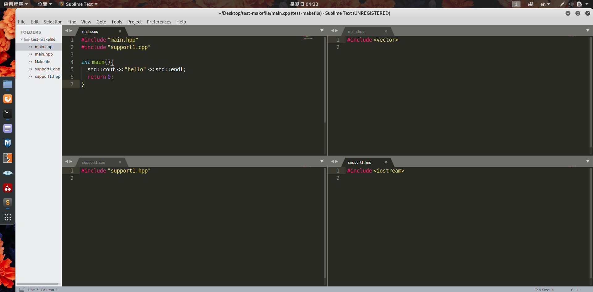
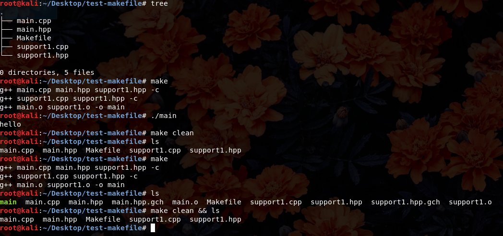

Makefile简介
Makefile是一个定义项目的编译规则的文件，以便于整个项目的编译。
Makefile中就可以定义好各个文件的依赖关系，在之后再需要编译时，只需要执行 make命令就可以自动编译了。
在一次 make之后，一般 会生成很多 目标文件(*.o) 和一个可执行文件，当这些文件和源代码都没有被修改时，再次执行 make会提示 make: ‘bin/your_program’ is up to date.，而当你只修改了一个源代码文件再执行 make时，它也不会重复编译已经最新的文件，而只编译依赖了你的源代码的文件，这对提高编译效率是非常重要的。
基本语法
1 | target ... : prerequisites ... |
target 是下面的命令的 目标 ，即下面命令是为了target而生的。这个 目标 可以是*.o文件，也可以是可执行文件
prerequisites 则是生成该目标所 依赖 的文件，如果没有依赖的文件，下面的命令就不会执行且会中断 make
command 就是生成目标文件的命令，一般就是编译命令了，如 g++ main.cpp等等(注
意：命令前面必须有 Tab (‘\t’) 真正 的 Tab，这样make才会认为它是指令)

1 | main: main.o support1.o |

1 | # Makefile version 3 |
- 变量
- 在Makefile中可以使用”
:= ”声明变量，并在此后使用$( )可以使用，类似C/C++中的宏，它是字符串的直接替换。如 $(CC) $(FLAGS) csupport1.cpp会变成 g++ std=c++11 -w -c support1.cpp。 - 前缀是 $符号，后面带个括号 ()的都是变量，如 $@也是变量，称为 自动化变量，它是目标文件的名字。如目标为 main的这一段的命令会变成 g++ std=c++ -w main.o support1.o -o main
- 伪目标
- clean一段中，target后面没有依赖文件，这称为 伪目标 ，作用是写了之后就可以使用 make clean来执行它的命令集了
- 这里的命令集可以使用许多shell命令，但似乎并不是所有都能用
- 命令前面的 @表示 不显示这条命令 ，和Windows下的.bat类似(下面分别是不使
用 @和使用 @的对比)
1 | 在Makefile中加入 |
复杂一点的情况
有时候一个项目的目录并没有如此简单，例如：
1 | . |
- bin是编译生成的可执行文件
- build是编译的中间文件如*.o文件
- include是各种.h或.hpp文件
- lib是一些必要的库文件
- src是.cpp文件
这个时候，事情并不简单。因为现在的代码“身首异处”，所以要把它们的路径告诉编译器才行，我们使用 相对路径 来达到效果。
.表示当前目录， ..表示上一级目录，用类似这样的相对路径来找到需要的文件，当然 ./经常可以省略
以下面的目录结构为目标(假设原本不存在 bin目录和 build目录)：
1 | . |
因为最后的目标 main在 bin目录中，所以target也应该是 bin/main，而其依赖的两个文件也要写清楚目录了 build/main.o build/support1.o。
而在编译前，应该确认 bin和 build都是存在的目录，因此需要在编译前多一条命令 mkdir -p bin。因为要指明文件目录，于是编译命令变成 g++ std=c++11 -w build/main.o build/support1.o -o bin/main
由于在support1.cpp中我们写了 #include “support1.hpp”，按以前的经验，这样写是只能找到同一个文件夹下的文件的，所以需要加一个编译器的参数 I./include，让它去其他地方找头文件。这样编译命令就完成了，生成.o文件的也类似。那么Makefile就可以写出来了
1 | CC := g++ |
这样就好了吗？不，不可以。将来要是文件结构有了偏差，写这个Makefile的人是要负责的。如果目录不同了，那么改各个路径要每个都改，而最好的做法应该是只改一处就影响全局。所以应该下面这样会更好。
1 | CC := g++ |
然而这个Makefile还可以更加简短并更加完善
1 | CC := g++ |
- 两个自动化变量
- $^依赖文件的集合，用空格分隔
- $<第一个依赖文件
- 其实在 %.o部分，也可以换成 $^
- 还有上文已经提过的 $@目标文件
- 通配符 %
- 作用是就是 *的作用了通配
这里的好处就是当 src目录下再多cpp文件时，生成%.o文件的这一部分不用更改，生成可执行文件那里只要加一个依赖就好了
实际上还有方法让生成可执行文件的规则也自动